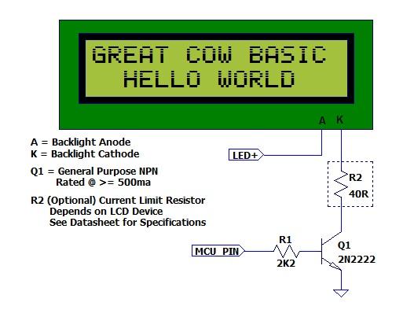

Syntax:
LCDBacklight ( On | Off )
Command Availability:
Available on all microcontrollers
Explanation:
Sets the LCD backlight on or off
Do not connect the LCD backlight directly to the microcontroller! Always refer to the datasheet for the correct method to drive the LCD backlight.
For 0, 4, 8, 404 LCD types you must define the controlling port.pin for the LCD backlight.
'this port.pin is connected to the LCD backlight via a suitable circuit
#define LCD_Backlight porta.4
...
...
...
...
LCDBacklight ( On )
.... more user code...
LCDBacklight ( Off )
Inverting the State of the LCD
You may need to invert the state of the LCD backlight control port. This can be achieved by setting the following constants.
'Invert the LCD Backlight States to suit the circuit board
#define LCD_Backlight_On_State 0 'the default constant value is 1
#define LCD_Backlight_Off_State 1 'the default constant value is 0
The diagram below shows a method to connect the LCD backlight to a microcontroller.
 The diagram above was provided by William Roth, January 2015.
Supported in <LCD.H>